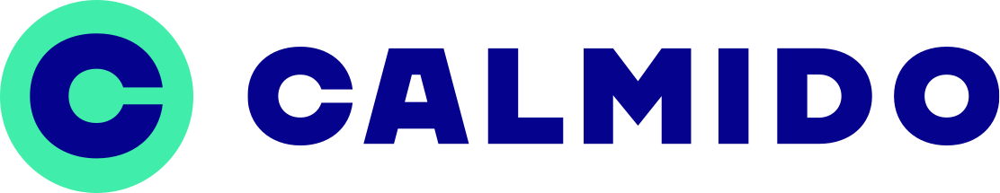

identity · logo · voice
A recurring icon across the file (Handshake-Bellen, Handshake-icoin-outline, Trust page). Use it whenever you signal mutual verification between caller and callee.
Stroke version only — never fill. Size from 40–160 px.
full lockup · multi-colour · paired backgrounds
Default lockup for light surfaces.

logo/logo.svg — rendered as <img> so brand colours are preserved.
Wordmark inherits the surrounding color; brand C mark stays fixed (bright-green disc + dark-blue glyph). Inline the SVG (or use <use>) — currentColor won't propagate through <img>.
logo/logo_mask.svg — wordmark fills are currentColor.
Call-product variant — green C disc with phone receiver glyph carries the brand on either surface.
logo/logo_call.svg.
Tintable Call variant — wordmark inherits the surrounding color; the C disc + phone receiver mark stays fixed.
logo/logo_call_mask.svg — wordmark fills are currentColor.
Use the PNGs only where SVG isn't supported — email signatures, social-media avatars, third-party embeds. Prefer the SVGs everywhere else.
15 named tokens · from Page-1/CSS styles
Geologica · Open Sans · Courier Prime
primitives observed across frames
textual links · underline + arrow
Read more about how Calmido works in our privacy policy or browse the community guidelines.
.link · Calmido Blue · underline 4px offset · → via ::after · hover flips to Dark Green. Inside any card body (.scard__body or .icard__body), the same .link matches the card CTA: Bright Green underlined with arrow, hover flips to Dark Green.
background-color) · items wrapping an <a> get the same Calmido Blue underline + Dark Green hover as .link; plain-text items inherit body color.
outlined pill · standard · switch · check
:focus-within.
.number-check--error (border --c-alert-red, overrides focus). Message renders directly under the field in the same red.
.is-error (border --c-alert-red, beats focus) and the .help line swaps to .help--error in the same red. Message renders directly below the field.
--c-alert-red (#FD5240), overrides focus. Message renders directly under the pill in the same red.
--c-dark-grey) holds two zones split by a thin divider.
Left zone: 20×14 px PNG flag (/images/flags/<iso>.png) + +<dial> + chevron, wrapping a native <select> so the dropdown is OS-styled.
Right zone: <input type="tel"> for the national number (server resolves country + national → canonical E.164 — no client-side parse).
Country list comes from /api/server/countries; fallback is the bundled ISO list when the endpoint is unreachable, so any country can still be picked.
Focus ring on the whole shell (--c-dark-green); --error swaps to --c-alert-red and beats the focus colour so the red persists while typing.
Hide the chevron + lock the select when used read-only (e.g. directory reclaim — the number is fixed).
46 px default · 26 px badge pill
Material-style · 24 px · #081748 ink
Loaded from icons/.
--ico-fill regardless of what each source SVG declares.
Loaded from icons/call/.
--ico-fill regardless of what each source SVG declares.
Loaded from icons/report_categories/.
--ico-fill regardless of what each source SVG declares.
upload pipeline · shared spec across web · android · ios
The member avatar shown on every Caller Card. Every channel center-crops and re-encodes locally so the server's normalizer never has to resize a well-behaved upload. The 1024 / 2 MiB caps stay as the hard backstop.
| Setting | Value |
|---|---|
| Output dimensions | 512 × 512 (square) |
| Aspect | center-crop to square before encode |
| Upload format | image/jpeg, quality 0.85 |
| Server allowlist | PNG + JPEG recommended; GIF, BMP, TIFF, WBMP also accepted (legacy) |
| Server max dimension | 1024 px (each side) — downscaled with bilinear interpolation, same format |
| Server max payload | 2 MiB — typical 512² JPEG is 30–80 KB, well under |
| Channel | Crop + scale | Source |
|---|---|---|
| Web | crop modal · 512² canvas · toBlob('image/jpeg', 0.85) |
calmido-website/app/[locale]/(main)/settings/CropModal.js |
| Android | centerCropSquare() · resize to 512² · JPEG @ 85 |
calmido-phone-android/.../ui/util/AvatarUtils.kt |
| iOS | center-crop · render to 512² · jpegData(compressionQuality: 0.85) |
calmido-phone-ios/.../UI/Calmido/MemberEditScreen.swift |
Live at domain-service/directory-service/.../converters/AvatarNormalizer.scala.
Steps in order:
MaxBytes (2 MiB).MaxDimension (1024), scale down preserving aspect ratio, re-encode in the same format.(format, bytes) — caller stamps mimeType from format.shared 320×200 spec · web · android · ios
Canonical caller card used across all Calmido surfaces. Source of truth lives in
calmido-website/components/card/CallerCard/; the Android and iOS implementations
mirror this spec. Three equal rows (1fr each): top row carries the Calmido logo or a
topLabel plus up to 3 flag icons; middle row carries the avatar; bottom row carries name +
phone · location.
--r-lg (16px) · dotted background via .calmido_dotted_card · flag/icon glyphs are CSS masks driven by currentColor.
The name slot in the bottom row is always populated. Each variant ships a default English
label (and localised counterparts) that is rendered as the fallback when no per-instance
displayName is supplied. Only Shielded goes a step further:
its label always wins, even when a displayName is set, so a leaked name from
an upstream adapter can never surface on the card. The remaining variants — Member,
Business, Neutral, Reported, Locked — show displayName when present and fall
back to the label only when it is blank, so a caller can still see who the locked or
reported person is.
| Variant | Default label (EN) | displayName precedence | Example |
|---|---|---|---|
| Member | Calmido Member | displayName wins · label is fallback | “Anna Smith” → “Anna Smith”. blank → “Calmido Member”. |
| Business | Unknown Caller | displayName wins · label is fallback | “John Galinsky” + topLabel “Bravotop Sales” → name shows “John Galinsky”. blank → “Unknown Caller”. |
| Neutral | Unknown Caller | displayName wins · label is fallback | contact-only “Marie Dupont” → “Marie Dupont”. blank → “Unknown Caller”. |
| Reported | Reported Caller | displayName wins · label is fallback | “Mark Helmsworth” → “Mark Helmsworth”. blank → “Reported Caller”. |
| Dangerous | Dangerous Caller | displayName wins · label is fallback | threat band High → red alert card + skull. blank → “Dangerous Caller”. |
| Locked | Locked Member | displayName wins · label is fallback | “Anna Smith” → “Anna Smith”. blank → “Locked Member”. |
| Shielded | Anonymous Caller | label always wins · displayName ignored | a shielded member with displayName “The Donnie” → “Anonymous Caller”. |
R.string.call_screen_caller_*; web mirrors the same keys via the i18n table. Override behaviour is owned by the variant enum — see CallerCardVariant.overwriteName in app/src/main/java/com/calmido/app/ui/card/CallerCard.kt.
Default variant — bright-green → dark-green gradient, Calmido C logo top-left, avatar fallback on dark-green disc.
topLabel replaces the logo and ellipsis-truncates next to the flag row; avatar falls back to business_1.svg; name drops to 18px when topLabel is set.
Fixed-avatar variants — middle-row glyph is a CSS mask, not an image. reported swaps to an orange→red gradient; alert is the shared red→deep-red template for locked / spoofing / scam / … — defaults render a locked member; override --cc-glyph (and --cc-glyph-size) to swap the glyph and drop in a caller-card__warning label next to the avatar to name the threat. The name slot then falls back to Anonymous/Unknown when no identity is set, like shielded and neutral. shielded uses near-black with bright-green ink; neutral uses grey.
Threat-band selection (web directory). On the number pages the flagged variant is chosen by the backend threat band — see domain-service/docs/rank-algorithm.md (a bounded 0–1 risk interval with a traffic-light band). Elevated (warning) → reported (orange, attention icon); High (dangerous) → the red alert template with the skull glyph, shipped on the web as caller-card--dangerous. Low / Unknown → not flagged. The band is decided from the interval's confidence bounds, so a lone unconfirmed complaint self-suppresses (stays Low) until corroborated.
community-threat bar (threat-bar) — one horizontal gauge shared by web, iOS & Android
A single left-origin gauge for the caller's community-threat level. Safe is on the left (green), dangerous on the right (red), so the raw 0–1 values map straight to a percentage. It is fed entirely by the backend threat interval on community.threat — see domain-service/docs/rank-algorithm.md — and carries no client-side heuristics, so every channel renders the same verdict. Three marks sit on the track: the gradient (the danger axis), the confidence band spanning [lower, upper] (tinted by the level), and a downward arrow at the mean.
The band is gated on the lower bound of the interval (not the mean), so a wide, unconfirmed interval self-suppresses until the evidence tightens. Two thresholds — recalibrated on production data (domain-service/docs/rank-algorithm.md) — split the 0–1 axis into the three verdict zones. The arrow (mean) only positions the marker; it never decides the band.
lower ≥ 0.72 → High · lower ≥ 0.45 → Elevated · else Low · no interval → Unknown. Card mapping: Elevated → orange reported, High → red dangerous.
Everything a native (iOS/Android) client needs to draw the same gauge from the DTO. All positions are a fraction of the track width; the axis origin is the left edge.
community.threat = { mean, lower, upper, band }. mean/lower/upper ∈ [0, 1] on a danger axis (0 = safe, 1 = dangerous). band is the ordinal 0 Unknown · 1 Low · 2 Elevated · 3 High. When the whole object is absent, render nothing — never infer "safe" from missing data.mean (clamp to [2%, 98%] so it stays on the track); band = left: lower, width: upper − lower (min width ~2px). All as a percentage of the track.--c-dark-green 0% → #9ACD32 30% → #F5A623 58% → --c-stop-red 100%.--c-dark-green, Elevated #F5A623, High --c-stop-red, Unknown --c-mid-grey. Band is the level colour at ~38–45% opacity; arrow is the solid level colour.band. If it is absent, derive from the lower bound: lower ≥ 0.72 → High; lower ≥ 0.45 → Elevated; else Low; a null interval → Unknown. Gating on the lower bound means a lone unconfirmed complaint self-suppresses (stays Low) until corroborated."Risk level: Suspicious"); the band and arrow are decorative.generic content card with chrome (section-card · scard) and column-style mini-card without chrome (info-card · icard)
Body — minimal usage with just title and body.
Subtitle
Body — standard usage with icon, title, subtitle, body and a cta.
Call to actionCalm_Title_M · subtitle Calm_Body_S · body Calm_Body_L.
Body — minimal usage with just title and body.
Subtitle
Body — standard usage with icon, title, subtitle, body and a cta.
Call to actionBody — minimal usage with just title and body.
Subtitle
Body — standard usage with icon, title, subtitle, body and a cta.
Call to actionCalm_Title_L · subtitle Calm_Title_S (Dark Green) · body Calm_Body_L.
Body — minimal usage with just title and body.
Subtitle
Body — standard usage with icon, title, subtitle, body and a cta.
Call to action.scard--full with .scard--inverse on dark surfaces. Body uses rgba(255,255,255,0.75) (matches footer description); label dims to rgba(255,255,255,0.5). Inline <strong> inside the body lifts to full white so emphasis stays readable against the dimmed body.
Column-style mini-card · no chrome · used inside multi-column rows (values · protection · threats).
Body — minimal usage with just title and body.
Label
Subtitle
Body — standard usage with icon, label, title, subtitle and body.
Calm_Title_M · label Calm_Label_S · body Calm_Body_L. Icon slot 28×28 (auto-tints to currentColor).
Body — minimal usage with just title and body.
Label
Subtitle
Body — standard usage with icon, label, title, subtitle and body.
.icard--inverse when sitting on a dark surface — title, label, body and icon all flip to --c-white.
Section card (.scard) — composition order, all slots optional:
--full)--full) + title + optional subtitle<strong>, <span>, <a>)::afterVariants stack on the base .scard:
normal (default) — radius 16 · padding 24 · Calm_Title_M--full — radius 24 · padding 32 28 · Calm_Title_L · hover lift · for feature pillars--inverse — for use over dark surfaces (combinable with above)Info card (.icard) — column primitive without chrome, all slots optional:
--inverse)--inverse); sits between title and body.scard as <a> (linked, hover state). Otherwise <div> (static). Use .icard inside a multi-column grid (e.g. content_section_grid + grid_column_4) when no chrome (background, border, padding) is needed.
{kind=link}
{kind=link}
{kind=link}